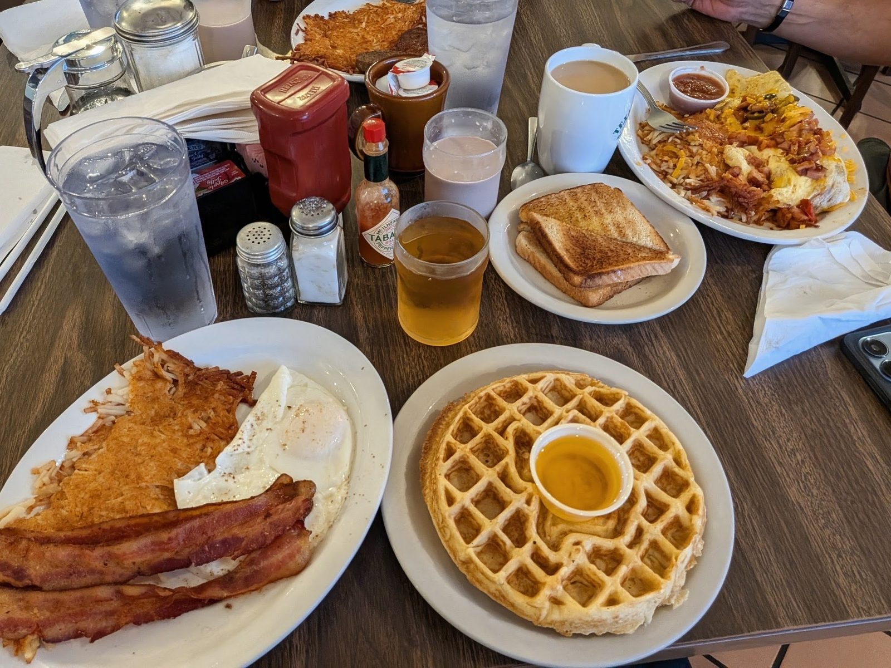

ITEM 1
Breakfast, all day
Eggs, hash browns and sausage with a cup of salsa, served any hour we are open. Hot and fresh.
Breakfast restaurant · Bastrop, TX
Hot, fresh plates. Generous portions. Friendly staff.

What we serve
Plates that come out hot and fresh.
Eggs, hash browns and sausage with a cup of salsa, served any hour we are open. Hot and fresh.

A stack of golden pancakes, or a waffle with syrup on the side.

Lunch starts at 11 AM. Chicken fried steak, with homemade desserts to finish.


4.2 ★ · 1060 Google reviews
Went here for breakfast and it was really good. Food came out hot and fresh, reasonable prices, and everything tasted great. Service was on point too, staff was friendly and kept everything moving. Nice atmosphere overall, just a solid spot to grab breakfast and start your day.
From the moment we walked through the door, the staff was so friendly! After getting to our table, our drink order was taken and delivered and their sodas are right on point! We ordered and got our food in perfect time. The portions are more than expected and I have a whole breakfast from the leftovers for tomorrow! We HIGHLY recommend this establishment!!
The place is such a cool country town kind of place. Absolutely loved the staff, they were slam packed and they still had time to check on us. The food was pretty good, eggs cooked wonderfully which is why I hate to say anything negatively but if I was pushed to say anything the biscuits need improvement. These were like dinner rolls in my opinion. Loved everything else!
Kitchen notes
Tile floor reads "Welcome to the Texas Grill." Booths run toward the windows, an arcade machine sits by the glass, and the counter holds local keepsakes.
Busy most mornings, and staff still check on every table. Portions are big enough for leftovers.

Pickup / dine in
101 State Hwy 71, Bastrop, TX 78602
Find us on Highway 71 West in Bastrop. Breakfast all day, homestyle lunch from 11 AM.